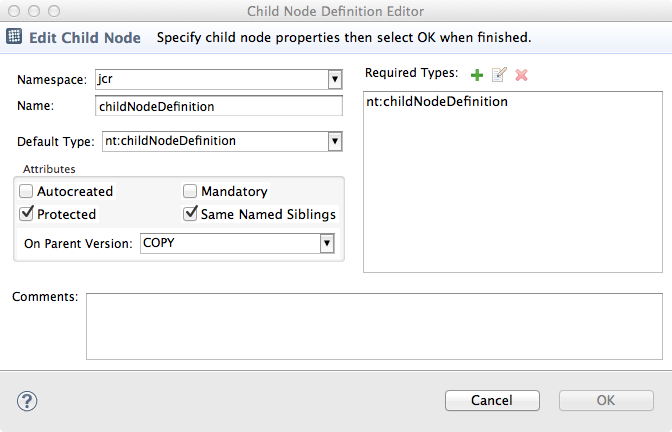

|
|
ModeShape Tools - CND Editor |
The Child Node Editor is used to create and modify a node type's child node definitions.
Here is what the Child Node Editor looks like:
The editor consists of the following:
| Header Section | shows information and validation error messages |
| Namespace | the prefix of the associated namespace mapping |
| Name | the unqualified JCR name or '*' to indicate the definition is residual |
| Default Type | defining the node type that child nodes of this type will be given if it is auto-created or created without an explicitly specified node type |
| Autocreated Attribute | indicates if a child node of this type will be automatically created |
| Mandatory Attribute | indicates if a child node of this type must be present in the declaring node type |
| On-Parent-Version Attribute | indicates what happens to child nodes of this type when a new version of the parent is created |
| Protected Attribute | indicates if child nodes of this type are protected from being deleted |
| Same-Name-Siblings Attribute | indicates if child nodes of this type can have the same name |
| Required Types | an optional list of types that child nodes of this type are restricted to |
| Comments | additional information about this child node definition that is saved to the file |
Once all required information is filled in and validated, the 'Finish' button will be enabled and the new child node definition can be created or changed. The new or changed child node definition will appear in the CND editor's child definitions table. The Child Node Definition Editor can be opened from the child node definitions table by either:
Add Child Node toolbar button, orEdit Child Node toolbar button